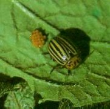
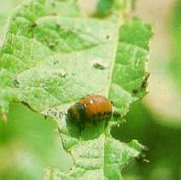

Burgonyabogár
Leptinotarsa decemlineata
A burgonya, paradicsom és tojásgyümölcs leveleit a bogarak és lárvái rövid idő alatt teljesen letarolhatják.A jól ismert kártevő bogár alakban a talajban telel. Évente 2 nemzedéke fejlődik. Az imágó áprilisban jön elő, érési táplálkozást folytat, s ezt követően rakja le nagy számú tojásait a levelek fonákjára. A második nemzedék bogarai június-július hóban rajzanak.
Védekezés:
- Kiskertekben a bogarak, tojáscsomók rendszeresen összegyűjtve
megsemmisíthetők.
- Nagyobb területeken vegyszeres úton tudjuk mentesíteni ültetvényünket a
kártevőtől. Szükséges ez már az imágók ellen - különösen a helyrevetett
paradicsomnál -, majd a tömeges lárvakelés idején.
Növényvédőszer-javaslat:
|  |